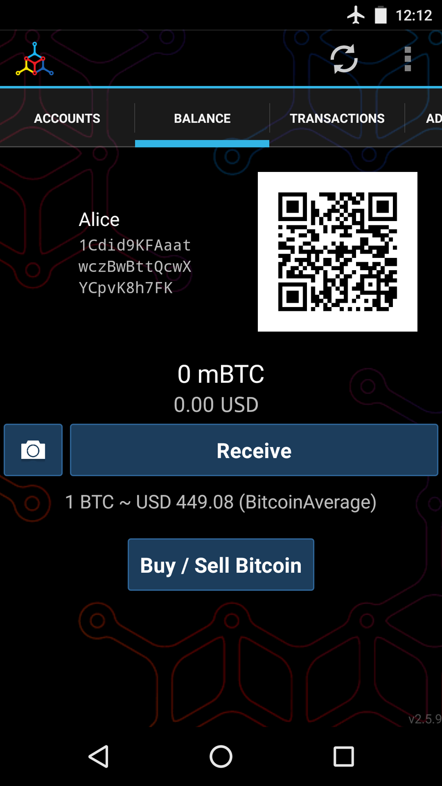
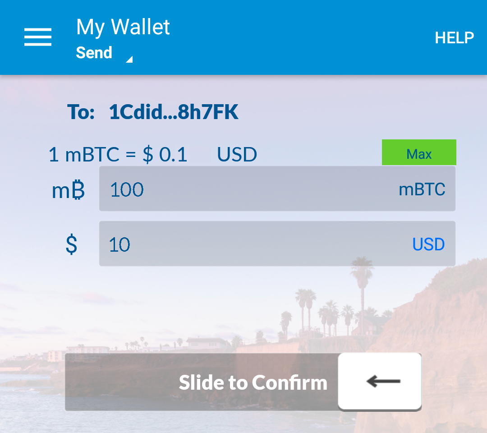

What Is Bitcoin?
Bitcoin is a collection of concepts and technologies that form the basis of a digital money ecosystem. Units of currency called bitcoin are used to store and transmit value among participants in the bitcoin network. Bitcoin users communicate with each other using the bitcoin protocol primarily via the internet, although other transport networks can also be used. The bitcoin protocol stack, available as open source software, can be run on a wide range of computing devices, including laptops and smartphones, making the technology easily accessible.
Users can transfer bitcoin over the network to do just about anything that can be done with conventional currencies, including buy and sell goods, send money to people or organizations, or extend credit. Bitcoin can be purchased, sold, and exchanged for other currencies at specialized currency exchanges. Bitcoin in a sense is the perfect form of money for the internet because it is fast, secure, and borderless.
Unlike traditional currencies, bitcoin are entirely virtual. There are no physical coins or even digital coins per se. The coins are implied in transactions that transfer value from sender to recipient. Users of bitcoin own keys that allow them to prove ownership of bitcoin in the bitcoin network. With these keys they can sign transactions to unlock the value and spend it by transferring it to a new owner. Keys are often stored in a digital wallet on each user’s computer or smartphone. Possession of the key that can sign a transaction is the only prerequisite to spending bitcoin, putting the control entirely in the hands of each user.
Bitcoin is a distributed, peer-to-peer system. As such there is no "central" server or point of control. Bitcoin are created through a process called "mining," which involves competing to find solutions to a mathematical problem while processing bitcoin transactions. Any participant in the bitcoin network (i.e., anyone using a device running the full bitcoin protocol stack) may operate as a miner, using their computer’s processing power to verify and record transactions. Every 10 minutes, on average, a bitcoin miner is able to validate the transactions of the past 10 minutes and is rewarded with brand new bitcoin. Essentially, bitcoin mining decentralizes the currency-issuance and clearing functions of a central bank and replaces the need for any central bank.
The bitcoin protocol includes built-in algorithms that regulate the mining function across the network. The difficulty of the processing task that miners must perform is adjusted dynamically so that, on average, someone succeeds every 10 minutes regardless of how many miners (and how much processing) are competing at any moment. The protocol also halves the rate at which new bitcoin are created every 4 years, and limits the total number of bitcoin that will be created to a fixed total just below 21 million coins. The result is that the number of bitcoin in circulation closely follows an easily predictable curve that approaches 21 million by the year 2140. Due to bitcoin’s diminishing rate of issuance, over the long term, the bitcoin currency is deflationary. Furthermore, bitcoin cannot be inflated by "printing" new money above and beyond the expected issuance rate.
Behind the scenes, bitcoin is also the name of the protocol, a peer-to-peer network, and a distributed computing innovation. The bitcoin currency is really only the first application of this invention. Bitcoin represents the culmination of decades of research in cryptography and distributed systems and includes four key innovations brought together in a unique and powerful combination. Bitcoin consists of:
-
A decentralized peer-to-peer network (the bitcoin protocol)
-
A public transaction ledger (the blockchain)
-
A set of rules for independent transaction validation and currency issuance (consensus rules)
-
A mechanism for reaching global decentralized consensus on the valid blockchain (Proof-of-Work algorithm)
As a developer, I see bitcoin as akin to the internet of money, a network for propagating value and securing the ownership of digital assets via distributed computation. There’s a lot more to bitcoin than first meets the eye.
In this chapter we’ll get started by explaining some of the main concepts and terms, getting the necessary software, and using bitcoin for simple transactions. In following chapters we’ll start unwrapping the layers of technology that make bitcoin possible and examine the inner workings of the bitcoin network and protocol.
History of Bitcoin
Bitcoin was invented in 2008 with the publication of a paper titled "Bitcoin: A Peer-to-Peer Electronic Cash System," written under the alias of Satoshi Nakamoto (see [satoshi_whitepaper]). Nakamoto combined several prior inventions such as b-money and HashCash to create a completely decentralized electronic cash system that does not rely on a central authority for currency issuance or settlement and validation of transactions. The key innovation was to use a distributed computation system (called a "Proof-of-Work" algorithm) to conduct a global "election" every 10 minutes, allowing the decentralized network to arrive at consensus about the state of transactions. This elegantly solves the issue of double-spend where a single currency unit can be spent twice. Previously, the double-spend problem was a weakness of digital currency and was addressed by clearing all transactions through a central clearinghouse.
The bitcoin network started in 2009, based on a reference implementation published by Nakamoto and since revised by many other programmers. The implementation of the Proof-of-Work algorithm (mining) that provides security and resilience for bitcoin has increased in power exponentially, and now exceeds the combined processing power of the world’s top supercomputers. Bitcoin’s total market value has at times exceeded $135 billion US dollars, depending on the bitcoin-to-dollar exchange rate. The largest transaction processed so far by the network was $400 million US dollars, transmitted instantly and processed for a fee of $1.
Satoshi Nakamoto withdrew from the public in April 2011, leaving the responsibility of developing the code and network to a thriving group of volunteers. The identity of the person or people behind bitcoin is still unknown. However, neither Satoshi Nakamoto nor anyone else exerts individual control over the bitcoin system, which operates based on fully transparent mathematical principles, open source code, and consensus among participants. The invention itself is groundbreaking and has already spawned new science in the fields of distributed computing, economics, and econometrics.
Bitcoin Uses, Users, and Their Stories
Bitcoin is an innovation in the ancient technology of money. At its core, money simply facilitates the exchange of value between people. Therefore, in order to fully understand bitcoin and its uses, we’ll examine it from the perspective of people using it. Each of the people and their stories, as listed here, illustrates one or more specific use cases. We’ll be seeing them throughout the book:
- North American low-value retail
-
Alice lives in Northern California’s Bay Area. She has heard about bitcoin from her techie friends and wants to start using it. We will follow her story as she learns about bitcoin, acquires some, and then spends some of her bitcoin to buy a cup of coffee at Bob’s Cafe in Palo Alto. This story will introduce us to the software, the exchanges, and basic transactions from the perspective of a retail consumer.
- North American high-value retail
-
Carol is an art gallery owner in San Francisco. She sells expensive paintings for bitcoin. This story will introduce the risks of a "51%" consensus attack for retailers of high-value items.
- Offshore contract services
-
Bob, the cafe owner in Palo Alto, is building a new website. He has contracted with an Indian web developer, Gopesh, who lives in Bangalore, India. Gopesh has agreed to be paid in bitcoin. This story will examine the use of bitcoin for outsourcing, contract services, and international wire transfers.
- Web store
-
Gabriel is an enterprising young teenager in Rio de Janeiro, running a small web store that sells bitcoin-branded t-shirts, coffee mugs, and stickers. Gabriel is too young to have a bank account, but his parents are encouraging his entrepreneurial spirit.
- Charitable donations
-
Eugenia is the director of a children’s charity in the Philippines. Recently she has discovered bitcoin and wants to use it to reach a whole new group of foreign and domestic donors to fundraise for her charity. She’s also investigating ways to use bitcoin to distribute funds quickly to areas of need. This story will show the use of bitcoin for global fundraising across currencies and borders and the use of an open ledger for transparency in charitable organizations.
- Import/export
-
Mohammed is an electronics importer in Dubai. He’s trying to use bitcoin to buy electronics from the United States and China for import into the UAE to accelerate the process of payments for imports. This story will show how bitcoin can be used for large business-to-business international payments tied to physical goods.
- Mining for bitcoin
-
Jing is a computer engineering student in Shanghai. He has built a "mining" rig to mine for bitcoin using his engineering skills to supplement his income. This story will examine the "industrial" base of bitcoin: the specialized equipment used to secure the bitcoin network and issue new currency.
Each of these stories is based on the real people and real industries currently using bitcoin to create new markets, new industries, and innovative solutions to global economic issues.
Getting Started
Bitcoin is a protocol that can be accessed using a client application that speaks the protocol. A "bitcoin wallet" is the most common user interface to the bitcoin system, just like a web browser is the most common user interface for the HTTP protocol. There are many implementations and brands of bitcoin wallets, just like there are many brands of web browsers (e.g., Chrome, Safari, Firefox, and Internet Explorer). And just like we all have our favorite browsers (Mozilla Firefox, Yay!) and our villains (Internet Explorer, Yuck!), bitcoin wallets vary in quality, performance, security, privacy, and reliability. There is also a reference implementation of the bitcoin protocol that includes a wallet, known as the "Satoshi Client" or "Bitcoin Core," which is derived from the original implementation written by Satoshi Nakamoto.
Choosing a Bitcoin Wallet
Bitcoin wallets are one of the most actively developed applications in the bitcoin ecosystem. There is intense competition, and while a new wallet is probably being developed right now, several wallets from last year are no longer actively maintained. Many wallets focus on specific platforms or specific uses and some are more suitable for beginners while others are filled with features for advanced users. Choosing a wallet is highly subjective and depends on the use and user expertise. It is therefore impossible to recommend a specific brand or wallet. However, we can categorize bitcoin wallets according to their platform and function and provide some clarity about all the different types of wallets that exist. Better yet, moving keys or seeds between bitcoin wallets is relatively easy, so it is worth trying out several different wallets until you find one that fits your needs.
Bitcoin wallets can be categorized as follows, according to the platform:
- Desktop wallet
-
A desktop wallet was the first type of bitcoin wallet created as a reference implementation and many users run desktop wallets for the features, autonomy, and control they offer. Running on general-use operating systems such as Windows and Mac OS has certain security disadvantages however, as these platforms are often insecure and poorly configured.
- Mobile wallet
-
A mobile wallet is the most common type of bitcoin wallet. Running on smart-phone operating systems such as Apple iOS and Android, these wallets are often a great choice for new users. Many are designed for simplicity and ease-of-use, but there are also fully featured mobile wallets for power users.
- Web wallet
-
Web wallets are accessed through a web browser and store the user’s wallet on a server owned by a third party. This is similar to webmail in that it relies entirely on a third-party server. Some of these services operate using client-side code running in the user’s browser, which keeps control of the bitcoin keys in the hands of the user. Most, however, present a compromise by taking control of the bitcoin keys from users in exchange for ease-of-use. It is inadvisable to store large amounts of bitcoin on third-party systems.
- Hardware wallet
-
Hardware wallets are devices that operate a secure self-contained bitcoin wallet on special-purpose hardware. They are operated via USB with a desktop web browser or via near-field-communication (NFC) on a mobile device. By handling all bitcoin-related operations on the specialized hardware, these wallets are considered very secure and suitable for storing large amounts of bitcoin.
- Paper wallet
-
The keys controlling bitcoin can also be printed for long-term storage. These are known as paper wallets even though other materials (wood, metal, etc.) can be used. Paper wallets offer a low-tech but highly secure means of storing bitcoin long term. Offline storage is also often referred to as cold storage.
Another way to categorize bitcoin wallets is by their degree of autonomy and how they interact with the bitcoin network:
- Full-node client
-
A full client, or "full node," is a client that stores the entire history of bitcoin transactions (every transaction by every user, ever), manages users' wallets, and can initiate transactions directly on the bitcoin network. A full node handles all aspects of the protocol and can independently validate the entire blockchain and any transaction. A full-node client consumes substantial computer resources (e.g., more than 125 GB of disk, 2 GB of RAM) but offers complete autonomy and independent transaction verification.
- Lightweight client
-
A lightweight client, also known as a simple-payment-verification (SPV) client, connects to bitcoin full nodes (mentioned previously) for access to the bitcoin transaction information, but stores the user wallet locally and independently creates, validates, and transmits transactions. Lightweight clients interact directly with the bitcoin network, without an intermediary.
- Third-party API client
-
A third-party API client is one that interacts with bitcoin through a third-party system of application programming interfaces (APIs), rather than by connecting to the bitcoin network directly. The wallet may be stored by the user or by third-party servers, but all transactions go through a third party.
Combining these categorizations, many bitcoin wallets fall into a few groups, with the three most common being desktop full client, mobile lightweight wallet, and web third-party wallet. The lines between different categories are often blurry, as many wallets run on multiple platforms and can interact with the network in different ways.
For the purposes of this book, we will be demonstrating the use of a variety of downloadable bitcoin clients, from the reference implementation (Bitcoin Core) to mobile and web wallets. Some of the examples will require the use of Bitcoin Core, which, in addition to being a full client, also exposes APIs to the wallet, network, and transaction services. If you are planning to explore the programmatic interfaces into the bitcoin system, you will need to run Bitcoin Core, or one of the alternative clients (see [alt_libraries]).
Quick Start
Alice, who we introduced in Bitcoin Uses, Users, and Their Stories, is not a technical user and only recently heard about bitcoin from her friend Joe. While at a party, Joe is once again enthusiastically explaining bitcoin to all around him and is offering a demonstration. Intrigued, Alice asks how she can get started with bitcoin. Joe says that a mobile wallet is best for new users and he recommends a few of his favorite wallets. Alice downloads "Mycelium" for Android and installs it on her phone.
When Alice runs Mycelium for the first time, as with many bitcoin wallets, the application automatically creates a new wallet for her. Alice sees the wallet on her screen, as shown in The Mycelium Mobile Wallet (note: do not send bitcoin to this sample address, it will be lost forever).

Figure 1. The Mycelium Mobile Wallet
The most important part of this screen is Alice’s bitcoin address. On the screen it appears as a long string of letters and numbers: 1Cdid9KFAaatwczBwBttQcwXYCpvK8h7FK. Next to the wallet’s bitcoin address is a QR code, a form of barcode that contains the same information in a format that can be scanned by a smartphone camera. The QR code is the square with a pattern of black and white dots. Alice can copy the bitcoin address or the QR code onto her clipboard by tapping the QR code, or the Receive button. In most wallets, tapping the QR code will also magnify it, so that it can be more easily scanned by a smartphone camera.
|
Tip
|
Bitcoin addresses start with a 1 or 3. Like email addresses, they can be shared with other bitcoin users who can use them to send bitcoin directly to your wallet. There is nothing sensitive, from a security perspective, about the bitcoin address. It can be posted anywhere without risking the security of the account. Unlike email addresses, you can create new addresses as often as you like, all of which will direct funds to your wallet. In fact, many modern wallets automatically create a new address for every transaction to maximize privacy. A wallet is simply a collection of addresses and the keys that unlock the funds within.
|
Alice is now ready to receive funds. Her wallet application randomly generated a private key (described in more detail in [private_keys]) together with its corresponding bitcoin address. At this point, her bitcoin address is not known to the bitcoin network or "registered" with any part of the bitcoin system. Her bitcoin address is simply a number that corresponds to a key that she can use to control access to the funds. It was generated independently by her wallet without reference or registration with any service. In fact, in most wallets, there is no association between the bitcoin address and any externally identifiable information including the user’s identity. Until the moment this address is referenced as the recipient of value in a transaction posted on the bitcoin ledger, the bitcoin address is simply part of the vast number of possible addresses that are valid in bitcoin. Only once it has been associated with a transaction does it become part of the known addresses in the network.
Alice is now ready to start using her new bitcoin wallet.
Getting Your First Bitcoin
The first and often most difficult task for new users is to acquire some bitcoin. Unlike other foreign currencies, you cannot yet buy bitcoin at a bank or foreign exchange kiosk.
Bitcoin transactions are irreversible. Most electronic payment networks such as credit cards, debit cards, PayPal, and bank account transfers are reversible. For someone selling bitcoin, this difference introduces a very high risk that the buyer will reverse the electronic payment after they have received bitcoin, in effect defrauding the seller. To mitigate this risk, companies accepting traditional electronic payments in return for bitcoin usually require buyers to undergo identity verification and credit-worthiness checks, which may take several days or weeks. As a new user, this means you cannot buy bitcoin instantly with a credit card. With a bit of patience and creative thinking, however, you won’t need to.
Here are some methods for getting bitcoin as a new user:
-
Find a friend who has bitcoin and buy some from him or her directly. Many bitcoin users start this way. This method is the least complicated. One way to meet people with bitcoin is to attend a local bitcoin meetup listed at Meetup.com.
-
Use a classified service such as localbitcoins.com to find a seller in your area to buy bitcoin for cash in an in-person transaction.
-
Earn bitcoin by selling a product or service for bitcoin. If you are a programmer, sell your programming skills. If you’re a hairdresser, cut hair for bitcoin.
-
Use a bitcoin ATM in your city. A bitcoin ATM is a machine that accepts cash and sends bitcoin to your smartphone bitcoin wallet. Find a bitcoin ATM close to you using an online map from Coin ATM Radar.
-
Use a bitcoin currency exchange linked to your bank account. Many countries now have currency exchanges that offer a market for buyers and sellers to swap bitcoin with local currency. Exchange-rate listing services, such as BitcoinAverage, often show a list of bitcoin exchanges for each currency.
|
Tip
|
One of the advantages of bitcoin over other payment systems is that, when used correctly, it affords users much more privacy. Acquiring, holding, and spending bitcoin does not require you to divulge sensitive and personally identifiable information to third parties. However, where bitcoin touches traditional systems, such as currency exchanges, national and international regulations often apply. In order to exchange bitcoin for your national currency, you will often be required to provide proof of identity and banking information. Users should be aware that once a bitcoin address is attached to an identity, all associated bitcoin transactions are also easy to identify and track. This is one reason many users choose to maintain dedicated exchange accounts unlinked to their wallets.
|
Alice was introduced to bitcoin by a friend so she has an easy way to acquire her first bitcoin. Next, we will look at how she buys bitcoin from her friend Joe and how Joe sends the bitcoin to her wallet.
Finding the Current Price of Bitcoin
Before Alice can buy bitcoin from Joe, they have to agree on the exchange rate between bitcoin and US dollars. This brings up a common question for those new to bitcoin: "Who sets the bitcoin price?" The short answer is that the price is set by markets.
Bitcoin, like most other currencies, has a floating exchange rate. That means that the value of bitcoin vis-a-vis any other currency fluctuates according to supply and demand in the various markets where it is traded. For example, the "price" of bitcoin in US dollars is calculated in each market based on the most recent trade of bitcoin and US dollars. As such, the price tends to fluctuate minutely several times per second. A pricing service will aggregate the prices from several markets and calculate a volume-weighted average representing the broad market exchange rate of a currency pair (e.g., BTC/USD).
There are hundreds of applications and websites that can provide the current market rate. Here are some of the most popular:
- Bitcoin Average
-
A site that provides a simple view of the volume-weighted-average for each currency.
- CoinCap
-
A service listing the market capitalization and exchange rates of hundreds of crypto-currencies, including bitcoin.
- Chicago Mercantile Exchange Bitcoin Reference Rate
-
A reference rate that can be used for institutional and contractual reference, provided as part of investment data feeds by the CME.
In addition to these various sites and applications, most bitcoin wallets will automatically convert amounts between bitcoin and other currencies. Joe will use his wallet to convert the price automatically before sending bitcoin to Alice.
Sending and Receiving Bitcoin
Alice has decided to exchange $10 US dollars for bitcoin, so as not to risk too much money on this new technology. She gives Joe $10 in cash, opens her Mycelium wallet application, and selects Receive. This displays a QR code with Alice’s first bitcoin address.
Joe then selects Send on his smartphone wallet and is presented with a screen containing two inputs:
In the input field for the bitcoin address, there is a small icon that looks like a QR code. This allows Joe to scan the barcode with his smartphone camera so that he doesn’t have to type in Alice’s bitcoin address, which is quite long and difficult to type. Joe taps the QR code icon and activates the smartphone camera, scanning the QR code displayed on Alice’s smartphone.
Joe now has Alice’s bitcoin address set as the recipient. Joe enters the amount as $10 US dollars and his wallet converts it by accessing the most recent exchange rate from an online service. The exchange rate at the time is $100 US dollars per bitcoin, so $10 US dollars is worth 0.10 bitcoin (BTC), or 100 millibitcoin (mBTC) as shown in the screenshot from Joe’s wallet (see Airbitz mobile bitcoin wallet send screen).

Figure 2. Airbitz mobile bitcoin wallet send screen
Joe then carefully checks to make sure he has entered the correct amount, because he is about to transmit money and mistakes are irreversible. After double-checking the address and amount, he presses Send to transmit the transaction. Joe’s mobile bitcoin wallet constructs a transaction that assigns 0.10 BTC to the address provided by Alice, sourcing the funds from Joe’s wallet and signing the transaction with Joe’s private keys. This tells the bitcoin network that Joe has authorized a transfer of value to Alice’s new address. As the transaction is transmitted via the peer-to-peer protocol, it quickly propagates across the bitcoin network. In less than a second, most of the well-connected nodes in the network receive the transaction and see Alice’s address for the first time.
Meanwhile, Alice’s wallet is constantly "listening" to published transactions on the bitcoin network, looking for any that match the addresses in her wallets. A few seconds after Joe’s wallet transmits the transaction, Alice’s wallet will indicate that it is receiving 0.10 BTC.
Alice is now the proud owner of 0.10 BTC that she can spend. In the next chapter we will look at her first purchase with bitcoin, and examine the underlying transaction and propagation technologies in more detail.